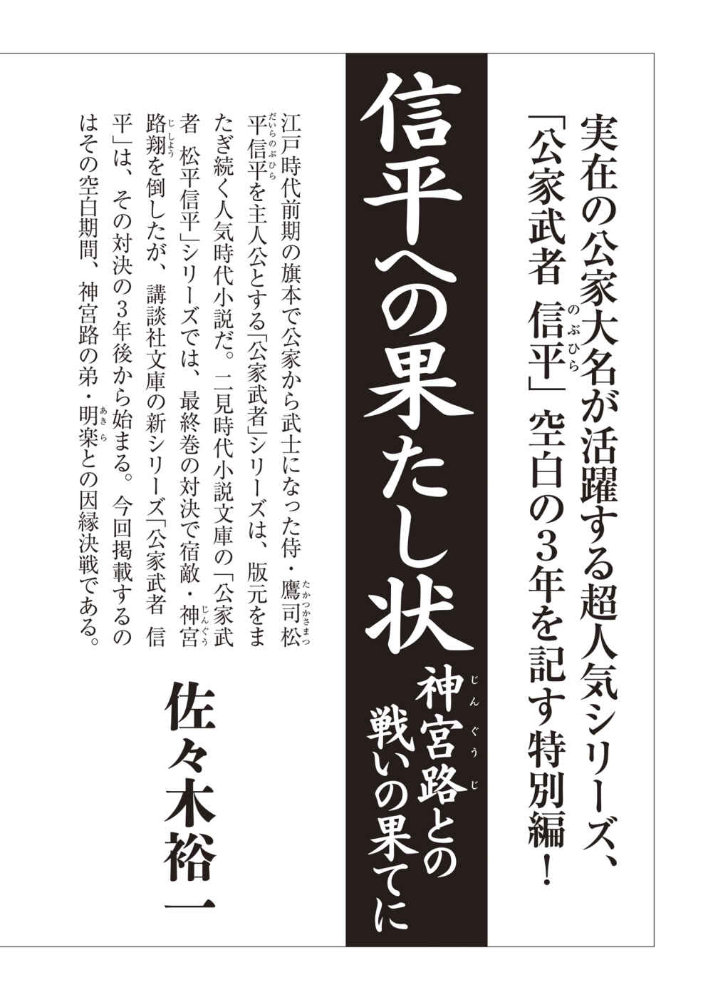
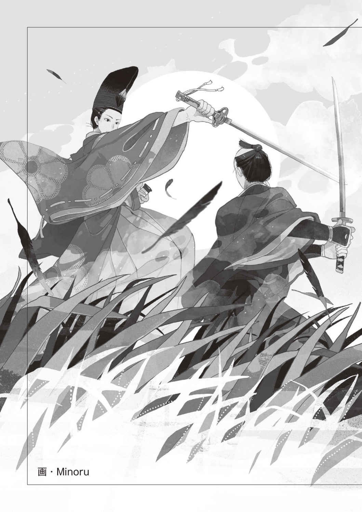
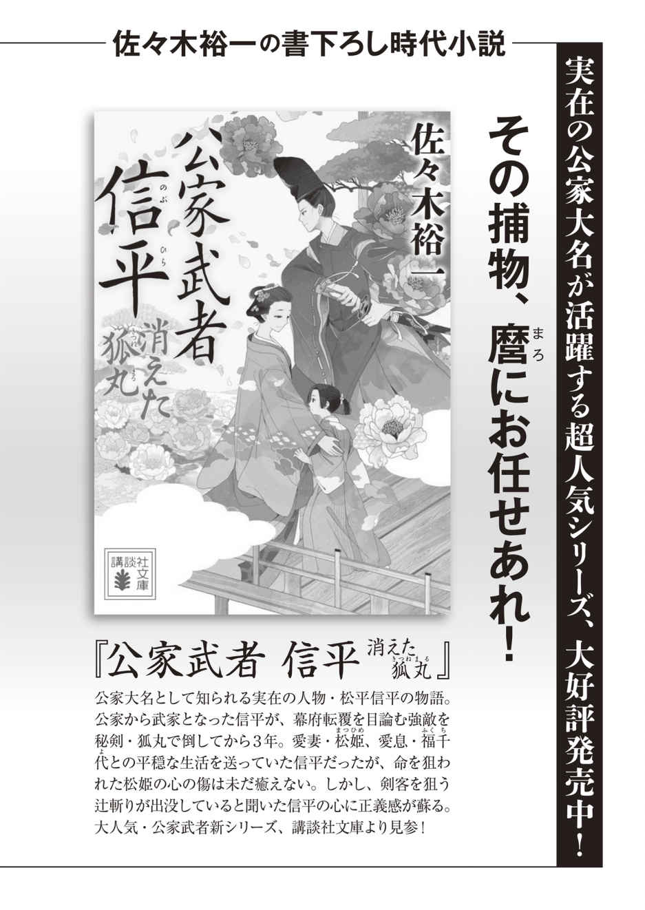
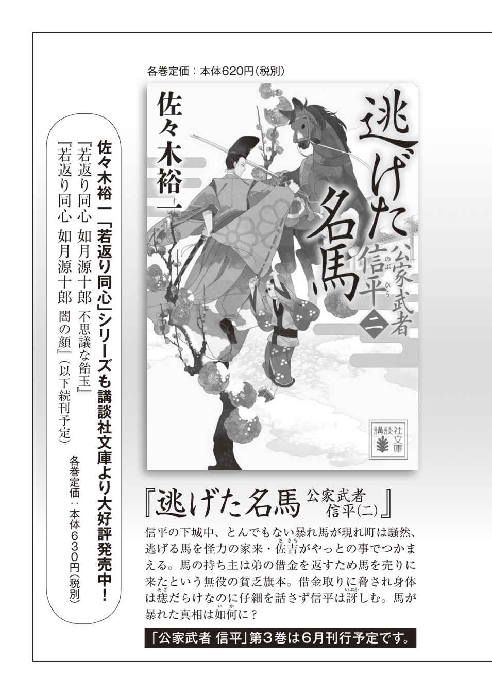

| 公家武者 信平 信平への果たし状 | |
| 佐々木裕一 | |
| 講談社 (2018) | |
本作品は、縦書き表示での閲覧を推奨いたします。横書き表示にした際には、表示が一部くずれる恐れがあります。
ご利用になるブラウザまたはビューワにより、表示が異なることがあります。
「わたしに勝ったと思うな、信平」
神宮路翔 が血走った目を見開き、不気味に笑う。
「お前の大切な者を奪ってやる。思い知るがいい」
神宮路が雲切丸を振り上げ、松姫を斬った。
「松！」
信平は目覚めて顔を上げた。静寂に包まれ、日差しの中で輝く池があり、美しい庭が広がっている。
昨夜眠れなかったせいか、ついうたた寝をしてしまい、悪い夢を見たようだ。
信平は安心して息を吐き、月見台から下がった。
奥御殿に渡り、松姫の部屋に行くと、福千代を眠らせたところだった松姫が、信平に微笑んだ。
床から出て身なりを整えている松姫に、信平も微笑む。
「無理をしていないか」
「はい。今日は、気分がようございます」
「ふむ」
信平はそばに座り、福千代の小さな手を触った。
「今朝、城から沙汰があった。しばらく登城を免除され、御役目も免ぜられる」
松姫は信平に、悲しそうな眼差しを向けた。
「わたくしのために、ご出世を断られたのですか」
信平は首を横に振った。
「麿が、そうしたいのだ。これからは、いつもそばにいる」
松姫の手をつかみ、引き寄せた。
「疲れた顔をしている。昨夜も眠れなかったのであろう」
「福千代が夜泣きをしますので」
噓だと、信平は分かっている。松姫は、信平と同じような悪夢に悩まされ、怯えて眠れないのだ。
神宮路に連れ去られ、両国橋の上で殺されかけたことが昨日のように目の奥に映り、松姫を苦しめている。
「少し休め。麿がそばにいる」
「はい」
明るい昼間に、信平の腕に抱かれて安心したのか、松姫は程なく、寝息を立てはじめた。
信平は松姫をそのまま寝させてやり、愛する人と共にいられる幸せを嚙みしめるのだった。
こうしているあいだも、江戸市中では、老中・稲葉美濃守の主導による、神宮路一党の探索がおこなわれている。
神宮路翔という巨頭を失い、核となる者もいない一党は、今や離散しているのだが、美濃守は残党狩りの手を緩めず、江戸のみでなく、関 八 州 、京、大坂へと探索の手を広げ、神宮路に加担していた者と判明すれば、容赦なく処刑した。
それにより、主だった者はいなくなったのだが、一部の者たちがふたたび江戸市中に潜伏しているという噂が流れ、町奉行所は南北総がかりで、身元が確かでない者のあぶり出しをはじめた。
中には、下っ端でも剛の者がおり、役人を斬殺して逃げ、商家を襲って金品を奪うなどしたので、市中は一時、混乱の極みに達した。
そこで、剛の者を取り押さえるべく、信平は先日美濃守に召し出され、五千石の役料と共に、与力五十騎、同心八十名を束ねる市中改役を打診されたのだが、
「ご期待に沿えませぬ」
と、辞退した。
美濃守は、これはおぬしと、おぬしの大切な家族の命に関わることだ、と、厳しい態度を見せたが、信平は応じない。
あきらめない美濃守は、三日だけ考える猶予を与えようとしたが、信平は頑 なに拒み、赤坂に帰ったのだ。
このことは、本丸に詰める者から信平の舅である紀州大納言頼宣に伝わり、重く受け止めた頼宣は、ただちに将軍家綱に拝謁を求め、美濃守殿は、功労者である信平を殺す気かと訴えた。
決定事項ならば、いかに頼宣が訴えても覆すことは叶わなかっただろう。
信平を案じていた家綱は、美濃守に取り下げるよう申しつけたのだが、美濃守はその場に平伏し、一人、厄介極まりない男がいることを告げた。
名を、神宮路明 楽 という若者は、神宮路翔の実の弟で、この者は名を変えて江戸に入り、二人の家来と共に身を潜めていた。
驚いた家綱と頼宣に、すでに、名うての剣客を五名殺され、もはや信平のほかに、神宮路明楽を倒せる者はいないと、美濃守は訴えたのだ。
だが頼宣は、神宮路明楽の名が世に聞こえていないことを不審に思い、問い詰めた。
すると美濃守は、明楽が神宮路翔の弟だという事実を隠し、一党の中でも下っ端の浪人として潜伏しているからだと告げた。
明楽の狙いはただ一つ、兄の仇 である信平の命。
頼宣は焦った。松姫がふたたび狙われるのではないかと思ったのだ。
娘を案じる頼宣に、美濃守はこう言った。
「市中改役は、むしろ信平殿を守るためでございました。役を受け、配下の者たちと神宮路明楽を討つよう申したのですが、どうしても受けませぬ」
頼宣が怒った。
「婿殿は何を考えておるのだ」
「もはや神宮路には関わりたくないと申し、聞きませぬ。屋敷に現れれば即座に成敗すると申しますので、やむなく帰しました」
頼宣は言葉を失い、家綱は、信平を守るためにできるだけのことはいたせ、と、美濃守に命じた。
日陰がある縁側に座っている信平は、目を閉じて、静かに思いをめぐらせている。美濃守に言われるまでもなく、この時すでに、明楽のことを知っていたからだ。
何げない文に見せかけた果たし状が届けられたのは、登城をする朝のことだった。
御屋敷に忍び込み、お命をちょうだいせんと思えば、容易 くでき申した。なれど、それがしは兄、神宮路翔のごとき卑怯なまねはいたしませぬ。
剣の道を志す者として、あなた様と剣を交え、兄の仇を打ちとうござる。
明後日の明け六つ。目黒川新橋を渡った先にある荒れ寺にてお待ち申し上げる。
一刻過ぎてもお姿なき時は、改めて、お命をもらい受けに御屋敷にまいる所存。
その折は、奥方とお子のお命もちょうだいつかまつる。
なお、決闘の場にはお一人でまいられるよう、申し上げる。
神宮路明楽
文に書かれていた一字一句を思い返した信平の気持ちは、すでに決まっている。
決闘の場に行くつもりだ。
生きて戻れるとは限らぬが、この命あらば、狐丸を封印し、松と福千代、そして家来たち、領地の民たちのために、穏やかに過ごそう。
命は、己一人だけのものではないのだ。
死ぬわけにはいかぬ。
自分に言い聞かせた信平は、ふと、見られている気がして眼差しを転じた。
廊下の先の柱のところで福千代が一人で立ち、じっと信平を見ていた。
信平は笑みを浮かべた。
「福千代、起きたのか。おいで」
すると福千代は、指をくわえて泣きはじめた。
信平ははっとして立ち上がり、福千代を抱いて奥御殿へ渡った。
部屋に行くと、福千代の床に倒れていた松姫が、苦しそうな息をしていた。
福千代を下ろした信平は、妻を抱き起こす。
「松......、松！」
松姫は薄く目を開けて何か言おうとしたが、辛そうに瞼を閉じた。
信平は薬水の器を引き寄せ、松姫に含ませた。
「ゆっくり息をするのだ。焦らずともよい」
松姫は顎を引き、言われたとおりにするのだが、呼吸が苦しそうだ。
そこへ、竹 島 糸 が戻ってきた。
台所に茶を淹れに行っていたのか、茶菓を載せていた折敷を持っていたが、松姫を見て落とした。
信平は松姫が何かをにぎっていることに気付き、右手を開いた。持っていたのは、小さくにぎりつぶされた文だ。
気付いた竹島糸が、はっとして着物の袂を探り、信平に頭を下げた。
「申しわけございませぬ」
「これはそなたの文か」
「はい」
その文は、舅頼宣が竹島糸に送ったもので、中には、神宮路明楽のことが書かれていた。
ふたたび命を狙うやもしれぬので、松を頼むと、書いてよこしていたのだ。
受け取った糸が目を通している時に松姫が現れたので、慌てて袂に入れたつもりが、茶を淹れに立った時、うっかり落としたことに気付かなかったのだ。
信平は文を糸に返し、松姫に眼差しを向ける。
「心配はいらぬ。福千代にもそなたにも、手出しさせぬ」
松姫は信平の手をにぎり、うつろな眼差しを向けた。
「旦那様、どこにも行かないでください」
どうやら松姫は、信平の決意を覚っているようだ。
何も言わぬ信平に、糸が驚いた。
「信平様、もしや神宮路の弟と戦われるのですか」
「旦那様、行かないで......」
「案ずるな。気持ちを安らかにいたせ」
信平は松姫に薬水を飲ませて、横にさせた。
松姫は心配そうな顔をしていたが、信平が福千代を抱いて見守っていると、呼吸も落ち着き、やがて眠りについた。
「糸」
「はい」
「このこと、誰かに話したか」
「葉山殿に」
「そうか。松と福千代を頼む」
「信平様......」
「行かなければ、明楽が来るのだ」
信平が立ち上がると、糸は福千代を引き寄せ、頭を下げた。
「奥方様と若君のために、どうか、ご無事でお戻りください」
「うむ」
信平は部屋を出た。
表御殿に戻るなり、
「殿！」
善衛門が走り寄る。
「先ほど糸殿から聞きました。神宮路の弟が江戸にいるのはまことでござるか」
「うむ」
「兄の仇を取りに来たのであれば、油断なりませぬぞ。忍び込まれぬよう、屋敷の守りを固めます」
「その必要はない」
「何ゆえでござる」
信平は果たし状を渡した。
受け取った善衛門が、読んで目を見張った。
「これはいつ届いたのです」
「明日の朝、行かねばならぬ」
「一人はなりませぬ。罠 に決まっております」
「ここに来させるわけにはいかぬ。このことは善衛門、そなたの胸に秘めておいてくれ」
「しかし......」
「騒げば松が怯える。心配するな。必ず生きて戻る」
「殿......」
信平は善衛門に顎を引き、下がらせた。障子が閉められると、長い息を吐いて立ち上がり、狐丸の前に行く。気持ちを落ち着かせて、手を伸ばした。
血がしたたる刀身を見つめる眼差しは、復 讐 に燃える光ではなく、冷徹そのもの。人を斬ることなどなんとも思わぬ、人斬りの目だ。
血振るいをする足下には、公儀が差し向けた剣客が倒れている。
「次は誰だ」
落ち着いた声に、囲んでいる者たちが焦りの色を浮かべる。
「おのれ！」
叫んだ侍が斬りかかった。袈裟懸けに斬り下ろした一撃を、神宮路明楽は顔色一つ変えずにかわし、前に出る。片手斬りに胴を払い、倒れる侍を見もせずに、次の相手に迫る。
慌てて刀を振り上げた侍の胸を突き、隙を突いて背後から斬りかかる侍を振り向きざまに斬った。
腹を斬り払った愛刀の切っ先から血がほとばしり、商家の戸を汚す。
人通りの絶えた道に呻き声が響き、倒れた侍が苦しんでいる。
神宮路明楽は血振るいをして刀を納め、暗い道から去った。
背後に近づいた二人の配下に、顔を向けもせずに訊く。
「信平はどうしている」
「先ほど屋敷を出ました」
「一人か」
「はい」
「さすがは兄上を倒した男だ。ではお前たちも去れ」
「しかし......」
「五味正三とやらが、多くの仲間を捕らえている。お前たちは奴を殺せ」
「かしこまりました」
二人の配下は、離れて行った。
明楽は一人夜道を歩み、決闘の場へ向かう。
信平が荒れ寺の山門を潜ったのは、果たし状に記されていた明け六つだ。
草の生えた山門から、無数の烏 が見おろしている。境内の木にも烏がいて、こちらはうるさいほどに鳴いていた。
膝まで伸びた草が境内を埋め尽くし、足下に土は見えない。草を踏み倒した一本筋が、朽ちて傾いた本堂まで続いている。
信平はその道筋をたどり、本堂へ向かう。正面の石段のところまで行った時、頭上に殺気を覚えた信平は、咄嗟に飛びすさった。
「うっ」
左腕に痛みが走るのと、飛び下りた人影が迫るのが同時だった。
信平は狐丸を抜き、斬りかかる相手の刀を受け流した。そして身体を転じ、相手の背中に一刀を浴びせたが、手ごたえはない。
なんの前触れもなく、戦いがはじまった。
明楽は二度飛びすさり、十分な間合いを取る。
対峙した信平に鋭い眼差しを向け、薄く赤い唇に笑みを浮かべた。
神宮路翔に似ていないが、美しい顔立ちをしている。だが冷徹な眼差しは兄と同じで、恐ろしいまでの剣気を宿している。
「信平、兄を倒しただけのことはある。だが言っておくが、剣の腕は兄よりおれが上だ。その首を取り、兄の御 霊 を鎮める」
「そうはさせぬ」
信平は左足を出して右手の狐丸を背後に隠し、左手を顔の前に上げて防御の構えを取った。
「まいる」
明楽は言うなり、正面に切っ先を下げたまま猛然と迫った。間合いを詰めるや、斬り上げた。
その一撃を信平にかわされるや、
「むん！」
裂ぱくの気合と共に、返す刀で斬り下ろす。
受けた信平の狐丸とぶつかり、激しい火花が散る。
激痛に呻いたのは、信平だ。
片手で受けた狐丸を押され、肩を引き斬られたのだ。
飛びすさる信平を追い、明楽が眼前に迫る。
次に振るわれた一撃を、信平は狐丸で受け流し、右に飛んで離れた。
片膝をついて息を荒くする信平に対し、明楽は勝ち誇った笑みを浮かべた。
「お前のような男に斬られるとは、兄上はずいぶん腕を落とされていたようだ」
「いや、そなたより神宮路翔のほうが強い」
「ふん、そのざまで言うな」
信平は長い息を吐き、立ち上がった。狐丸を右手ににぎり、両腕を広げて構える。
信平の凄まじい剣気に、明楽の顔から笑みが消えた。
「おのれ......」
刀を正眼に構えた明楽が、脇構えに転じて前に出る。
渾身の力をもって斬り下ろした明楽の前から、信平が消えた。
空振りをした明楽の目には、横に転じた信平が見えている。
「てや！」
叫んで刀を横に振るったが、空を斬った。
明楽の背後で狩衣の袖が舞い、狐丸が一閃された。
「うっ」
目を見張った明楽は、両膝をつき、刀をにぎったまま横向きに倒れた。
息絶えた明楽を見おろした信平は、狐丸の血振るいをして鞘に納め、静かに息を吐く。
きびすを返して山門へ行くと、柱の陰から善衛門が現れた。
心配そうな顔の善衛門に、信平は微笑む。声をかけようとして、足がふらついた。
「殿」
駆け寄った善衛門に、信平は言う。
「このままでは帰れぬ。着替えさせてくれ」
「このようなこともあろうかと、近くの寺に支度をしております。首尾は」
「うむ。弔いを頼む」
「寺の者に頼みましょう。さ、肩を」
「傷は浅い。今日のことは、皆には言わずにいてくれ」
「こころえました」
善衛門の手を借りて近くの寺に行き、そこで血止めをすると、着替えをして赤坂に帰った。
傷は痛むが、松姫の耳に入れぬためにも、皆に知られるわけにはいかぬ。
佐吉や頼母が、どこに行っていたのか訊いてきたが、善衛門がうまくごまかしてくれた。
信平は一人でその場を離れ、自分の部屋に入った。腰から狐丸を外して、そっと刀掛けに置く。
松が回復するまでは、そなたを抜くことはあるまい。
信平は胸の中でそう語り、狐丸を封印した。
肩と腕の痛みに息を止めて立ち上がり、部屋から出て障子を閉めた。
信平の影が去って程なく、障子が開けられ、狐丸に日の光が当たる。足音が近づき、人影が差した。じっと狐丸を見ているのは、福千代だ。
幼い福千代は何を思うのか、小さな手を狐丸に差し伸べ、雅 なこしらえの鞘に触れた。
「触ってはならぬ」
声に驚いた福千代が振り向く。
信平は、にんまりと笑う福千代に、
「よいな」
言い聞かせて、頭に手を差し伸べた。
狐丸がこの部屋から消えたのは、三年後のことだ。



